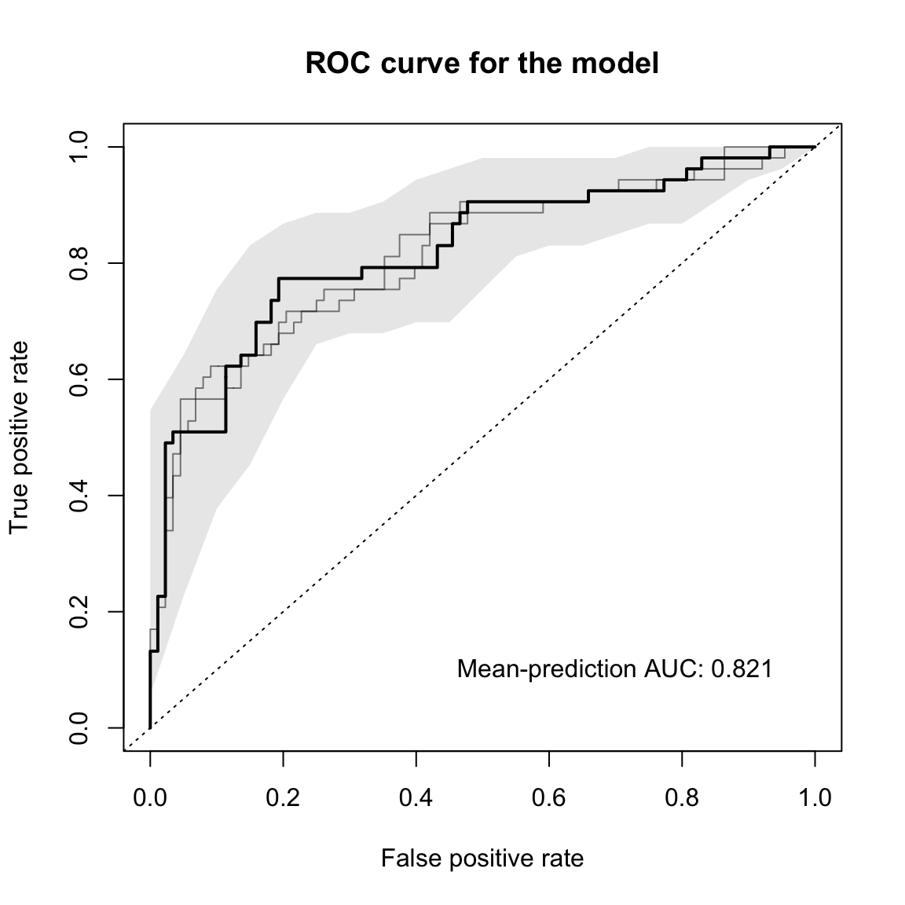
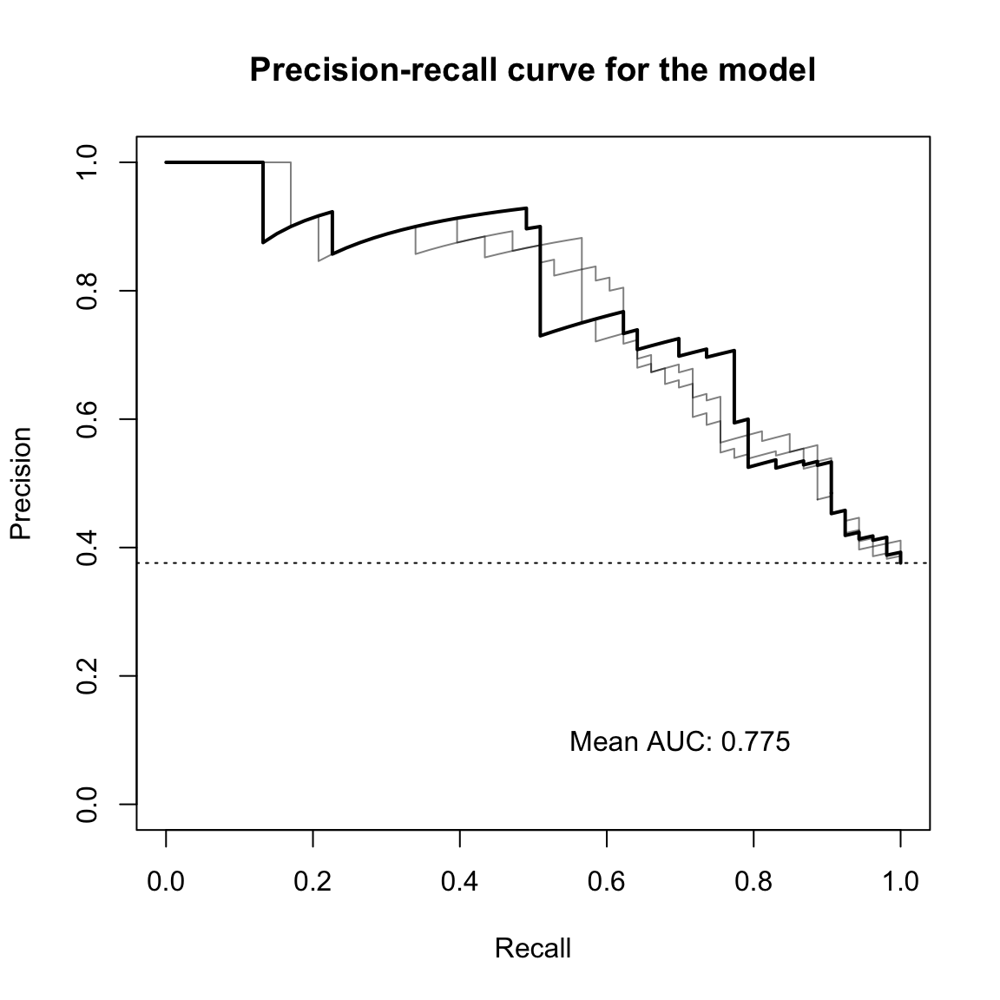

SIAMCAT: Statistical Inference of Associations between Microbial Communities And host phenoTypes
Konrad Zych, Jakob Wirbel, and Georg Zeller
EMBL Heidelberggeorg.zeller@embl.de
Date last modified: 2018-09-24
SIAMCAT_vignette.RmdAbout This Vignette
This vignette aims to be a short tutorial for the main functionalities of SIAMCAT. Examples of additional workflows or more detailed tutorials can be found in other vignettes (see the BioConductor page).
SIAMCAT is part of the suite of computational microbiome analysis tools hosted at EMBL by the groups of Peer Bork and Georg Zeller. Find out more at EMBL-microbiome tools.
Introduction
Associations between microbiome and host phenotypes are ideally described by quantitative models able to predict host status from microbiome composition. SIAMCAT can do so for data from hundreds of thousands of microbial taxa, gene families, or metabolic pathways over hundreds of samples. SIAMCAT produces graphical output for convenient assessment of the quality of the input data and statistical associations, for model diagnostics and inference revealing the most predictive microbial biomarkers.
Quick Start
For this vignette, we use an example dataset included in the SIAMCAT package. As example dataset we use the data from the publication of Zeller et al, which demonstrated the potential of microbial species in fecal samples to distinguish patients with colorectal cancer (CRC) from healthy controls.
library(SIAMCAT)
data("feat_crc_zeller", package="SIAMCAT")
data("meta_crc_zeller", package="SIAMCAT")First, SIAMCAT needs a feature matrix (can be either a matrix, a data.frame, or a phyloseq-otu_table), which contains values of different features (in rows) for different samples (in columns). For example, the feature matrix included here contains relative abundances for bacterial species calculated with the mOTU profiler for 141 samples:
feat.crc.zeller[1:3, 1:3]## CCIS27304052ST-3-0 CCIS15794887ST-4-0
## UNMAPPED 0.589839 0.7142157
## Methanoculleus marisnigri [h:1] 0.000000 0.0000000
## Methanococcoides burtonii [h:10] 0.000000 0.0000000
## CCIS74726977ST-3-0
## UNMAPPED 0.7818674
## Methanoculleus marisnigri [h:1] 0.0000000
## Methanococcoides burtonii [h:10] 0.0000000dim(feat.crc.zeller)## [1] 1754 141Please note that
SIAMCATis supposed to work with relative abundances. Other types of data (e.g. counts) will also work, but not all functions of the package will result in meaningful outputs.
Secondly, we also have metadata about the samples in another data.frame:
head(meta.crc.zeller)## Age BMI Gender AJCC_stage FOBT Group
## CCIS27304052ST-3-0 52 20 F -1 Negative CTR
## CCIS15794887ST-4-0 37 18 F -1 Negative CTR
## CCIS74726977ST-3-0 66 24 M -1 Negative CTR
## CCIS16561622ST-4-0 54 26 M -1 Negative CTR
## CCIS79210440ST-3-0 65 30 M -1 Positive CTR
## CCIS82507866ST-3-0 57 24 M -1 Negative CTRIn order to tell SIAMCAT, which samples are cancer cases and which are healthy controls, we can construct a label object from the Group column in the metadata.
label.crc.zeller <- create.label(meta=meta.crc.zeller,
label='Group', case='CRC')## Label used as case:
## CRC
## Label used as control:
## CTR## + finished create.label.from.metadata in 0.002 sNow we have all the ingredients to create a SIAMCAT object. Please have a look at the vignette about input formats for more information about supported formats and other ways to create a SIAMCAT object.
siamcat <- siamcat(feat=feat.crc.zeller,
label=label.crc.zeller,
meta=meta.crc.zeller)## + starting validate.data## +++ checking overlap between labels and features## + Keeping labels of 141 sample(s).## +++ checking sample number per class## +++ checking overlap between samples and metadata## + finished validate.data in 0.058 sA few information about the siamcat object can be accessed with the show function from phyloseq (SIAMCAT builds on the phyloseq data structure):
show(siamcat)## siamcat-class object
## label() Label object: 88 CTR and 53 CRC samples
##
## contains phyloseq-class experiment-level object @phyloseq:
## phyloseq@otu_table() OTU Table: [ 1754 taxa and 141 samples ]
## phyloseq@sam_data() Sample Data: [ 141 samples by 6 sample variables ]Since we have quite a lot of microbial species in the dataset at the moment, we can perform unsupervised feature selection using the function filter.features.
siamcat <- filter.features(siamcat,
filter.method = 'abundance',
cutoff = 0.001)## Features successfully filteredAssociation Testing
Associations between microbial species and the label can be tested with the check.associations function. The function computes for each species the significance using a non-parametric Wilcoxon test and different effect sizes for the association (e.g. AUC or fold change).
siamcat <- check.associations(
siamcat,
sort.by = 'fc',
alpha = 0.05,
mult.corr = "fdr",
detect.lim = 10 ^-6,
plot.type = "quantile.box",
panels = c("fc", "prevalence", "auroc"))The function produces a pdf file as output, since the plot is optimized for a landscape DIN-A4 layout, but can also used to plot on an active graphic device, e.g. in RStudio. The resulting plot then looks like that: 
Model Building
One strength of SIAMCAT is the versatile but easy-to-use interface for the construction of machine learning models on the basis of microbial species. SIAMCAT contains functions for data normalization, splitting the data into cross-validation folds, training the model, and making predictions based on cross-validation instances and the trained models.
Data Normalization
Data normalization is performed with the normalize.features function. Here, we use the log.unit method, but several other methods and customization options are available (please check the documentation).
siamcat <- normalize.features(
siamcat,
norm.method = "log.unit",
norm.param = list(
log.n0 = 1e-06,
n.p = 2,
norm.margin = 1
)
)## Features normalized successfully.Prepare Cross-Validation
Preparation of the cross-validation fold is a crucial step in machine learning. SIAMCAT greatly simplifies the set-up of cross-validation schemes, including stratification of samples or keeping samples inseperable based on metadata. For this small example, we choose a twice-repeated 5-fold cross-validation scheme. The data-split will be saved in the data_split slot of the siamcat object.
siamcat <- create.data.split(
siamcat,
num.folds = 5,
num.resample = 2
)## Features splitted for cross-validation successfully.Model Training
The actual model training is performed using the function train.model. Again, multiple options for customization are available, ranging from the machine learning method to the measure for model selection or customizable parameter set for hyperparameter tuning.
siamcat <- train.model(
siamcat,
method = "lasso"
)The models are saved in the model_list slot of the siamcat object. The model building is performed using the mlr R package. All models can easily be accessed.
# get information about the model type
model_type(siamcat)## [1] "lasso"# access the models
models <- models(siamcat)
models[[1]]## Model for learner.id=classif.cvglmnet; learner.class=classif.cvglmnet
## Trained on: task.id = data; obs = 112; features = 207
## Hyperparameters: nlambda=100,alpha=1Make Predictions
Using the data-split and the models trained in previous step, we can use the function make.predictions in order to apply the models on the test instances in the data-split. The predictions will be saved in the pred_matrix slot of the siamcat object.
siamcat <- make.predictions(siamcat)
pred_matrix <- pred_matrix(siamcat)head(pred_matrix)## CV_rep1 CV_rep2
## CCIS27304052ST-3-0 0.19880497 0.09535739
## CCIS15794887ST-4-0 0.25670422 0.16473066
## CCIS74726977ST-3-0 0.59187395 0.63774235
## CCIS16561622ST-4-0 0.54217795 0.09439314
## CCIS79210440ST-3-0 0.28578571 0.23673264
## CCIS82507866ST-3-0 0.08502265 0.07268986Model Evaluation and Interpretation
In the final part, we want to find out how well the model performed and which microbial species had been selected in the model. In order to do so, we first calculate how well the predictions fit the real data using the function evaluate.predictions. This function calculates the Area Under the Receiver Operating Characteristic (ROC) Curve (AU-ROC) and the Precision Recall (PR) Curve for each resampled cross-validation run.
siamcat <- evaluate.predictions(siamcat)## Evaluated predictions successfully.Evaluation Plot
To plot the results of the evaluation, we can use the function model.evaluation.plot, which produces a pdf-file showing the ROC and PR Curves for the different resamples runs as well as the mean ROC and PR Curve.
model.evaluation.plot(siamcat)
Interpretation Plot
The final plot produced by SIAMCAT is the model interpretation plot, created by the model.interpretation.plot function. The plot shows for the top selected features the
model weights (and how robust they are) as a barplot,
a heatmap with the z-scores or fold changes for the top selected features, and
a boxplot showing the proportions of weight per model which is captured by the top selected features.
Additionally, the distribution of metadata is shown in a heatmap below.
The function again produces a pdf-file optimized for a landscape DIN-A4 plotting region.
model.interpretation.plot(
siamcat,
fn.plot = 'interpretation.pdf',
consens.thres = 0.5,
norm.models = TRUE,
limits = c(-3, 3),
heatmap.type = 'zscore',
)The resulting plot looks like this: 
Session Info
## R version 3.5.3 (2019-03-11)
## Platform: x86_64-apple-darwin15.6.0 (64-bit)
## Running under: macOS Mojave 10.14.3
##
## Matrix products: default
## BLAS: /Library/Frameworks/R.framework/Versions/3.5/Resources/lib/libRblas.0.dylib
## LAPACK: /Library/Frameworks/R.framework/Versions/3.5/Resources/lib/libRlapack.dylib
##
## locale:
## [1] en_US.UTF-8/en_US.UTF-8/en_US.UTF-8/C/en_US.UTF-8/en_US.UTF-8
##
## attached base packages:
## [1] stats graphics grDevices utils datasets methods base
##
## other attached packages:
## [1] SIAMCAT_1.2.0 phyloseq_1.24.2 mlr_2.13 ParamHelpers_1.12
## [5] BiocStyle_2.8.2
##
## loaded via a namespace (and not attached):
## [1] nlme_3.1-137 matrixStats_0.54.0 fs_1.2.6
## [4] RColorBrewer_1.1-2 progress_1.2.0.9000 PRROC_1.3.1
## [7] rprojroot_1.3-2 tools_3.5.3 backports_1.1.3
## [10] R6_2.4.0 vegan_2.5-2 lazyeval_0.2.1
## [13] BiocGenerics_0.26.0 mgcv_1.8-27 colorspace_1.3-2
## [16] permute_0.9-4 ade4_1.7-11 tidyselect_0.2.4
## [19] gridExtra_2.3 prettyunits_1.0.2 compiler_3.5.3
## [22] parallelMap_1.3 glmnet_2.0-16 Biobase_2.40.0
## [25] xml2_1.2.0 desc_1.2.0 bookdown_0.7
## [28] scales_1.0.0 checkmate_1.9.1 pkgdown_1.3.0
## [31] commonmark_1.5 stringr_1.4.0 digest_0.6.18
## [34] rmarkdown_1.10 XVector_0.20.0 pkgconfig_2.0.2
## [37] htmltools_0.3.6 rlang_0.3.1 rstudioapi_0.7
## [40] BBmisc_1.11 bindr_0.1.1 jsonlite_1.5
## [43] dplyr_0.7.6 magrittr_1.5 biomformat_1.8.0
## [46] Matrix_1.2-15 Rcpp_1.0.0 munsell_0.5.0
## [49] S4Vectors_0.18.3 Rhdf5lib_1.2.1 ape_5.1
## [52] infotheo_1.2.0 stringi_1.3.1 pROC_1.13.0
## [55] yaml_2.2.0 MASS_7.3-51.1 zlibbioc_1.26.0
## [58] rhdf5_2.24.0 plyr_1.8.4 grid_3.5.3
## [61] LiblineaR_2.10-8 parallel_3.5.3 crayon_1.3.4
## [64] lattice_0.20-38 Biostrings_2.48.0 splines_3.5.3
## [67] multtest_2.36.0 hms_0.4.2 knitr_1.20
## [70] beanplot_1.2 pillar_1.3.1 igraph_1.2.2
## [73] reshape2_1.4.3 codetools_0.2-16 stats4_3.5.3
## [76] fastmatch_1.1-0 XML_3.98-1.17 glue_1.3.0
## [79] evaluate_0.11 data.table_1.12.0 foreach_1.4.4
## [82] gtable_0.2.0 purrr_0.2.5 assertthat_0.2.0
## [85] ggplot2_3.1.0 xfun_0.3 gridBase_0.4-7
## [88] roxygen2_6.1.0 survival_2.43-3 tibble_2.0.1
## [91] iterators_1.0.10 memoise_1.1.0 IRanges_2.14.10
## [94] bindrcpp_0.2.2 cluster_2.0.7-1 corrplot_0.84